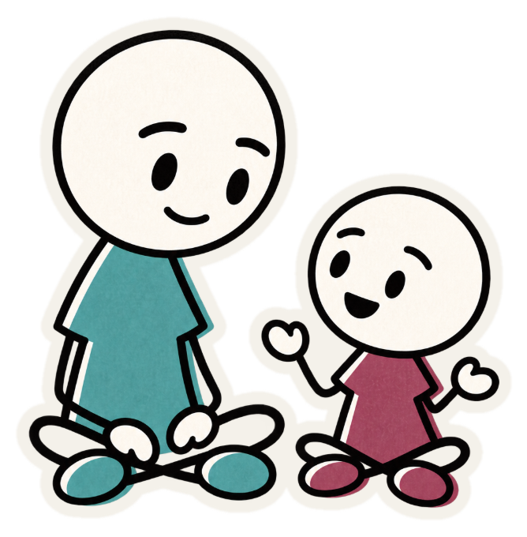
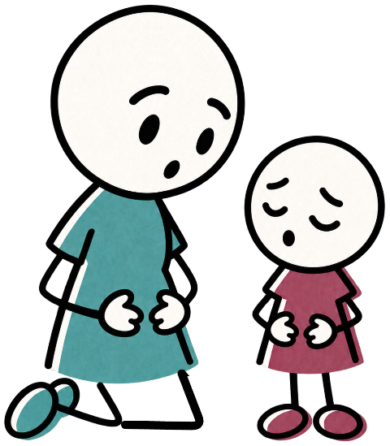

For parents of kindergarteners
Conscious Discipline at Home
About forty minutes, in as many sittings as you like. What you write stays on this device.
Started on another device?

An independent learning project. Not affiliated with, endorsed by, or reviewed by Conscious Discipline or Loving Guidance.
Before we start
One morning, before we begin
It is 7:40 in the morning and the bus comes in ten minutes. Your child is sitting in the hallway with one shoe on and the other kicked across the rug.
“I’m NOT wearing these stupid shoes! They feel weird and I HATE them!”
Nothing here is scored. It is kept so you can read it again at the end, beside what you would say by then.
There are no right answers yet
Keep that in mind
Hold on to what you wrote. What follows is about why mornings like it happen, and what small shifts change the outcome. You will see your answer again at the very end.
Goes straight to the phrase cards — words to use in the next ten minutes — and keeps a way back into Section 1 for later. Live once the cards land.
Conscious Discipline at Home
The approach your child’s teacher uses in the classroom, designed to help you implement and reinforce it at home. You will learn core principles of the practice and get a chance to practice putting them into action.
Nothing is graded, and nothing is reported to the school.
All three are open from the start. If the situations show an idea hasn’t landed yet, the module says which one and points you back to it.
Section 1 of 3
Assess, then Act
Assess is how to read a hard moment: what is happening in your child’s brain, and in yours. Act is what to do about it, in five moves.
Start with Assess to get the full picture. After that, go back to either part whenever you like.
The same three states, written twice.
Ready to think
Can hear you, can weigh two options.
ASKS“What do I do about this?”NEEDSTeaching lands here — two choices, a plan, a repair.
Upset
Shows in the words — yelling, blaming, “you never.”
ASKS“Do you still love me?”NEEDSConnection. Name the feeling before you name anything else.
Overwhelmed
Shows in the body — hitting, bolting, going rigid.
ASKS“Am I safe?”NEEDSSafety. Fewer words, slower voice, no questions or choices yet.
Ready to think
Can hear you, can weigh two options.
ASKS“What do I do about this?”NEEDSTeaching lands here — two choices, a plan, a repair.
Upset
Shows in the words — yelling, blaming, “you never.”
ASKS“Do you still love me?”NEEDSConnection. Name the feeling before you name anything else.
Overwhelmed
Shows in the body — hitting, bolting, going rigid.
ASKS“Am I safe?”NEEDSSafety. Fewer words, slower voice, no questions or choices yet.
Two moments, the same shape underneath.
WHAT YOU SEE
She screams that she will not put her shoes on.
THE WATERLINEtap each layer
So what changes? Not “stop screaming and put your shoes on” — but “these ones or those ones?”, offered before the shouting starts.
Tap each one to shift it.
- Notice it. Your jaw, your shoulders, your voice. Pick the one that goes first in you.
- Stop talking. Nothing said from the bottom state lands the way you mean it.
- One breath before the next word. Then choose the sentence, instead of letting it choose you.
She’s at Upset: yelling about the shoes. Two ways to answer her.

Correct first
“Stop yelling and put your shoes on. We’re going to be late.”
She drops to Overwhelmed. Now it’s her body talking, and nothing you say next can reach her.

Connect first
“Those shoes feel really wrong today.”
She comes up to Ready to think. The shoes still go on, but now she can hear you say so.
You’ll see this card again in Try It Out

In through the nose while the circle grows, out slowly while it shrinks.
There’s no card for this one in Try It Out. It’s something you do rather than something you say, so it isn’t scored. It still counts.
- Say what happens, not what she did wrong. “The shoes go on before the bus,” not “You’re being ridiculous.”
- Tell, don’t ask. “Can you put your shoes on?” invites a no you’ll have to overrule.
- Say it once. Repeating it turns the limit into an argument.
You’ll see this card again in Try It Out
- Both have to be fine with you. If one of them isn’t, it isn’t a choice.
- Wait for Ready to think. An overwhelmed child can’t weigh two things. Name the feeling first.
- Keep them small. This or that. Now, or after one more minute.
You’ll see this card again in Try It Out
End of section 1
Assess, then Act
Assess is how you read the moment. Act is what you do in it. Test Your Knowledge and Try It Out both listen for the five Act moves, by these names.
A reasonable place to stop, too. Your place is saved either way.
In your own words
What you wrote
One thing you could say
Taken at your word. Nobody is grading you — and the wording that tripped this is worth telling Marc about.
Scenario 1 · Screen time
It’s time to stop
After dinner. Maya has been on the tablet for forty minutes, and it is time to stop. Say what you would actually say — there’s no single right answer. You have up to three replies.


Preview double-tap to keep


Your strongest attempt is the one that counts.